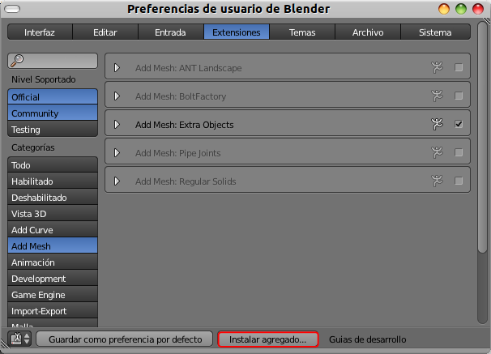

Instalación
En internet es fácil encontrar extensiones que aún no han logrado un hueco dentro de Blender (y quizá no lo hagan nunca) por diferentes motivos, pero que pueden ser lo que necesitamos en un determinado momento. Cuando los encontremos lo distinguiremos por su extensión .PY. Para instalarlo procederemos de la siguiente forma:
- Lo descargamos guardándolo en nuestro disco duro.
- Nos dirigimos al cuadro de gestión de Extensiones (Archivo/Preferencias de usuario)
- Pulsamos el botón inferior Instalar agregado y lo buscamos con el explorador de archivos.

Al cargarse es posible que de la sensación de que han desaparecido todas las extensiones pero es sólo una falsa alarma originada porque Blender hace una búsqueda automática. Si borramos la palabra del campo correspondiente todo vuelve a la normalidad.
En el ejemplo de arriba hemos cargado una increíble extensión para conseguir con facilidad una de las estéticas más relacionadas con el diseño 3D: renderizados con materiales de malla de alambre.